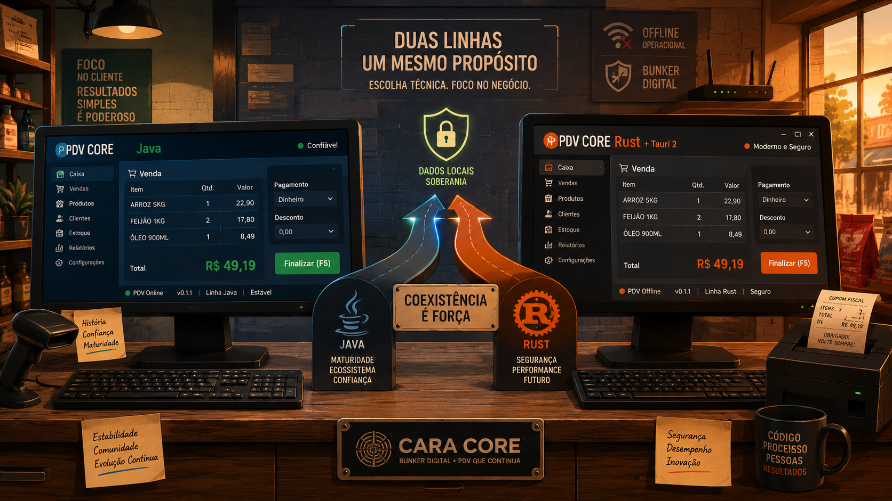

Duas Linhas no Balcão: PDV Desktop em Rust e Tauri 2
Para quem é este artigo
- Lojistas e gestores: entender por que existem duas linhas do PDV e qual usar no dia a dia.
- TI e integradores: avaliar Rust + Tauri 2 com critério, sem trocar o caixa maduro às pressas.
- Curiosos da oficina: ver como a Cara Core evolui produto sem discurso de “nova geração que substitui tudo”.
O que mudou em dezembro de 2026
Em 20 de dezembro, a Cara Core conta no retrô a segunda linha desktop do CaraCore PDV: Rust + Tauri 2, release v0.1.1, instaladores em português do Brasil.
O caixa que já opera na maioria das lojas não muda de endereço: continua em pdv.caracore.com.br (Java, canal v3.1.2-free).
Lembrete: se você buscou “abandonar Java”, este texto não é para isso. É para avaliar outra stack com o Java intacto.
Dois PDVs no balcão, uma promessa de loja
Na vitrine, é um só CaraCore PDV: vender com rede instável, dados no seu ambiente, fechamento de turno confiável.
Na oficina, são duas engenharias. Isso não duplica promessa — duplica caminho de entrega para quem precisa pilotar algo novo sem ruptura.
Rust entra para reduzir risco no caixa
Frase-âncora: no pior momento — fila cheia, modem oscilando — o caixa não pode “tropeçar em fio solto” por erro que só aparece sob pressão.
- Memória: Rust age como um conferente rigoroso antes de abrir o turno: muitos erros graves são barrados na compilação, não na véspera de Natal.
- Tarefas em paralelo: impressão, fila fiscal e sincronização andam juntas com menos chance de “esbarrar” umas nas outras.
- Pico de movimento: o motor liga e responde de forma estável quando a loja acelera — sem sustos típicos de pausas longas do sistema.
- Regras no lugar certo: o núcleo concentra caixa, pagamentos e auditoria; a tela pede, o cofre decide.
pdv-core em Rust — ownership, concorrência explícita, testes de regressão nas fronteiras de domínio; a UI não redefine regra de negócio.
Isso não rotula Java como fraco. É uma segunda via de validação — outro compilador, outro binário — para pilotos controlados.
Tauri 2 facilita instalar e evoluir o PDV
Frase-âncora: a loja precisa de instalador claro, abertura rápida e telas que o time consiga melhorar sem travar a operação.
- Instala mais leve: usa a WebView do Windows em vez de carregar um navegador inteiro — menos disco, boot mais ágil.
- Telas mais vivas: interface em React — a equipe evolui o balcão com ritmo de produto web, não só de desktop legado.
- TI e lojista no mesmo idioma: NSIS, MSI pt-BR e ZIP portátil — assistente em português, sem adivinhação.
- Mesmo compromisso Bunker: dados locais em SQLite; Windows, Linux e macOS na release v0.1.1.
Qual linha usar? (em três frases)
Use o Java se o caixa já paga as contas, com fiscal e hardware homologados — é a linha madura, canal v3.1.2-free.
Experimente o Rust + Tauri em um terminal de teste se quer MSI pt-BR, binário enxuto ou equipe forte em web — release v0.1.1, piloto assistido.
Não troque tudo numa noite. Duas linhas no balcão; uma loja só precisa de uma em produção até você medir com calma.
O mesmo Bunker nas duas linhas
Modem caiu? O caixa deveria continuar. Isso vale para as duas linhas — SQLite local, fila, fechamento, auditoria.
Rust + Tauri não vendem nuvem mágica. Vendem outro caminho para o mesmo compromisso de chão firme.
Como experimentar sem apostar o faturamento
- Baixe v0.1.1 nos releases oficiais e valide o checksum.
- Veja NSIS, MSI e ZIP em Formatos (loja Rust).
- Instale só em terminal de teste — nunca no único caixa em dia de pico.
- Compare abertura, venda, impressão e fechamento com o PDV Java que você já confia.
- Conte o resultado para suporte@caracore.com.br (versão + sistema operacional).
Comparação detalhada (para TI)
A tabela abaixo é referência técnica. Se você não é de TI, as três frases da seção anterior já bastam.
| Critério | PDV Desktop Java | PDV Desktop Rust + Tauri 2 |
|---|---|---|
| Maturidade | Canal v3.1.2-free, trilhas e wiki consolidados | Release v0.1.1, piloto assistido |
| Plataformas | Windows, Linux, macOS — referência madura | Win / Linux / macOS na v0.1.1 — validação em campo |
| Stack | Java 21, JavaFX, Quarkus, SQLite | Rust, Tauri 2, React, SQLite |
| Download | pdv.caracore.com.br | GitHub Releases |
| Risco | Baixo — continuidade | Controlado — piloto + suporte |
Conclusão
Duas linhas no balcão. Um Bunker. Sem pressa de trocar o que já funciona.
Rust cuida do cofre; Tauri cuida da fachada instalável. Java segue maduro no chão da loja. A pergunta útil é: qual linha resolve hoje — e qual você pode medir amanhã, em paralelo, sem apostar o faturamento?
Hashtags
Contato
- E-mail: suporte@caracore.com.br
- Site: www.caracore.com.br
- LinkedIn: Cara Core Informática
Download verificado no GitHub · vitrine em rust-pdv.caracore.com.br
Baixar no GitHub Ver no portfólio
Artigo publicado em 20 de dezembro de 2026
© 2026 Cara Core Informática. Todos os direitos reservados.